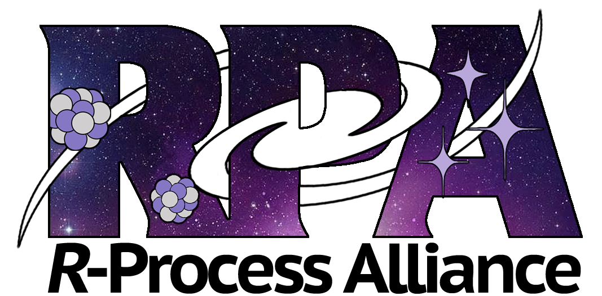

Research Interests
{kind=link}

My research interests include theoretical and observational investigations
of the rapid neutron capture ("r-") process.
Recently, we have investigated actinide production in the neutron-rich, tidal ejecta of a neutron star merger (NSM) event. We found that actinide production can be so robust in these ejecta that an additional actinide-poor, lanthanide-rich component is necessary in order to dilute the actinide levels to be in agreement with observations. Such a lanthanide-rich component may be found in the accretion disk wind trajectory of an NSM. The disk wind component must also be a dominant fraction of the ejecta mass in order to match observations of metal-poor stars that are enhanced with r-process elements and actinides.
I have also written a model that uses Monte Carlo methods in order to reconstruct what the ejecta distribution of an r-process event would have looked like (as a function of electron fraction, Ye) in order to reproduce the observed abundances in r-process enhanced stars. The results derived with this method are consistent with values derived from the GW170817 associated kilonova ("SSS17a"/"AT2017gfo"). This consistency could imply that NSMs are indeed the progenitors of the r-process material in metal-poor stars enhanced in these elements.
See more: Publications • Talks